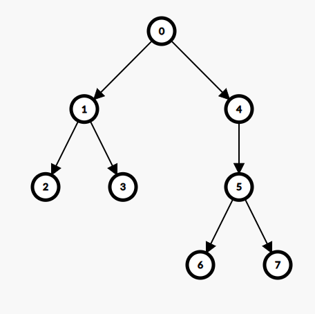
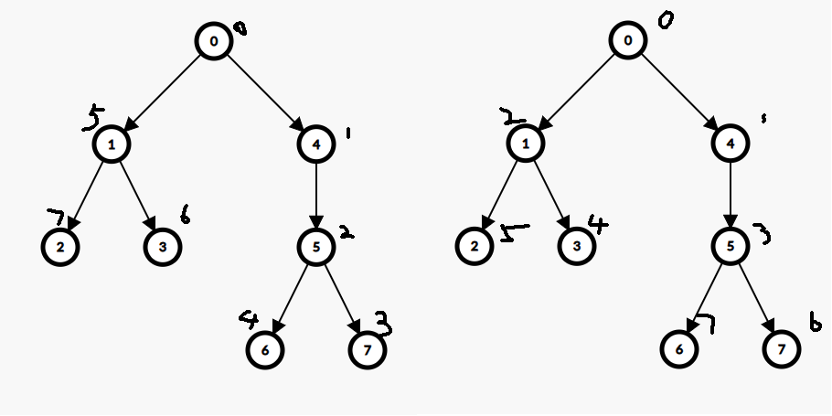

键入以搜索…
匹配算法：把输入按空格拆分，单独匹配每一段输入（不区分大小写，仅匹配文章文本内容），输出取或后的结果。
模糊搜索似乎很难搞，目前没有相关打算。
键入以搜索…
匹配算法：把输入按空格拆分，单独匹配每一段输入（不区分大小写，仅匹配文章文本内容），输出取或后的结果。
模糊搜索似乎很难搞，目前没有相关打算。
好像确实比斜优做着舒服。
https://atcoder.jp/contests/abc362/tasks/abc362_f
肯定直接猜以重心为根。
至于咋求答案，（显然值是所有点的深度之和），这个我去年在场上被卡住了，还是太菜了。其实是摩尔投票板子。
#include <bits/stdc++.h>
int main() {
#ifdef ONLINE_JUDGE
std::ios::sync_with_stdio(false);
std::cin.tie(nullptr), std::cout.tie(nullptr);
#else
std::freopen(".in", "r", stdin);
std::freopen(".out", "w", stdout);
#endif
int n;
std::cin >> n;
std::vector<std::vector<int> > g(n + 1);
for (int i = 1, x, y; i < n; ++i) {
std::cin >> x >> y;
g[x].push_back(y), g[y].push_back(x);
}
std::vector<int> siz(n + 1);
int rt = 0;
std::function<void(int, int)> DFS = [&](int x, int fa) {
siz[x] = 1;
bool flag = 1;
for (auto i : g[x])
if (i != fa) {
DFS(i, x);
siz[x] += siz[i];
if (siz[i] > n / 2)
flag = 0;
}
if (flag && n - siz[x] <= n / 2)
rt = x;
return;
};
DFS(1, -1);
std::vector<std::vector<int> > t(n + 1);
for (auto i : g[rt]) {
DFS = [&](int x, int fa) {
t[i].push_back(x);
for (auto i : g[x])
if (i != fa)
DFS(i, x);
return;
};
DFS(i, rt);
}
std::deque<int> p1, p2;
int to = n / 2;
for (auto i : g[rt]) {
auto &q1 = (p1.size() > p2.size() ? p2 : p1), &q2 = (p1.size() > p2.size() ? p1 : p2);
for (; !t[i].empty() && (int)q1.size() < to; q1.push_back(t[i].back()), t[i].pop_back());
for (; !t[i].empty() && (int)q2.size() < to; q2.push_front(t[i].back()), t[i].pop_back());
}
if (n % 2 == 0)
(p1.size() < p2.size() ? p1 : p2).push_back(rt);
for (; to--; ) {
std::cout << p1.back() << ' ' << p2.back() << '\n';
p1.pop_back(), p2.pop_back();
}
return 0;
}https://atcoder.jp/contests/arc117/tasks/arc117_d
容易发现任取 \(a,b,c\) 三点，由于它们之间只有一条简单路径，可以视为一条线段，即退化的三角形。那么由三角形三边关系，任取两边之和都大于等于第三边。
不妨令 \(E(a)>E(b)>E(c)\)，以 \(d(b,a)+d(b,c)\ge d(a,c)\) 举例，有 \(E(a)-E(b)+E(b)-E(c)\ge d(a,c)\) 成立；即，若 \((b,a)\) 和 \((b,c)\) 分别已经找到可行解，则 \((a,c)\) 合法。
从而推断出，按点权将所有点从小到大排序后，只需让任意相邻两点合法，则全树合法。易发现答案是所有相邻两点 \(dis\) 之和；也即，从任意一点出发，经过全树所有点的路径和。这种问题我们很熟悉，由欧拉序可知是从 \(2(n-1)\) 个 \(w\) 中抠走一段路径长（终点到起点）。想要最小化答案就要最大化这段路径长，取直径即可。
最后的答案序列按照欧拉序直接求即可（注意直径的端点要在序列两端），实现上应该可以有一些 \(O(n)\) 小巧思。
#include <bits/stdc++.h>
int main() {
#ifdef ONLINE_JUDGE
std::ios::sync_with_stdio(false);
std::cin.tie(nullptr), std::cout.tie(nullptr);
#else
std::freopen(".in", "r", stdin);
std::freopen(".out", "w", stdout);
#endif
int n;
std::cin >> n;
std::vector<std::vector<int> > g(n + 1);
for (int i = 1, x, y; i < n; ++i) {
std::cin >> x >> y;
g[x].push_back(y), g[y].push_back(x);
}
std::vector<int> dep(n + 1);
std::function<void(int, int)> DFS = [&](int x, int fa) {
for (auto i : g[x])
if (i != fa) {
dep[i] = dep[x] + 1;
DFS(i, x);
}
return;
};
dep[1] = 1, DFS(1, -1);
int p = std::max_element(dep.begin() + 1, dep.end()) - dep.begin();
dep[p] = 1, DFS(p, -1);
int q = std::max_element(dep.begin() + 1, dep.end()) - dep.begin();
std::vector<int> tag(n + 1);
std::function<bool(int, int)> DFS1 = [&](int x, int fa) {
if (x == q) {
tag[x] = 1;
return true;
}
for (auto i : g[x])
if (i != fa && DFS1(i, x)) {
tag[x] = 1;
return true;
}
return false;
};
DFS1(p, -1);
std::vector<int> res(n + 1);
DFS = [&](int x, int fa) {
static int now = 1;
int son = 0;
if (x != p)
res[x] = now;
for (auto i : g[x])
if (i != fa) {
if (tag[i])
son = i;
else
++now, DFS(i, x), ++now;
}
if (son)
++now, DFS(son, x); // 回不来了，故可以不加 ;-)
return;
};
res[p] = 1, DFS(p, -1);
for (int i = 1; i <= n; ++i)
std::cout << res[i] << ' ';
std::cout << '\n';
return 0;
}https://www.luogu.com.cn/problem/P1232
需要意识到 DFS 和 BFS 地位是不等价的：二者都有自己相应的性质，但 BFS 的深度性质更易于上手。
不妨进行重标号，令 BFS 序为 \(1\sim n\)。可以在 BFS 中不断进行『分层』得到点的深度信息。发现 \(1\) 后必须分割一次，除此之外没有 BFS 序本身带来的限制。考虑 DFS 序对深度带来的额外限制：
则得到若干条限制，形如某处必须断、某区间必须恰好断一次之类。发现比较难处理的是区间内没有要求『某个点必须断』的情况；可以差分约束
惊讶地发现，这种情况下有 \(D_{i+1}=D_i+1\)（可以考察第一个满足 \(D_i\ne i\)
的点来思考）。这点其实是比较难论证的，所以我也没有想得很清楚；好在信息也不是很要求证明这一块就是了。
用差分处理『恰好一次』的限制，标记某些点不能断。初始高度为 \(1\)；每次『必须分段』会带来 \(1\) 的高度；每次『可能分段』会带来 \(0.5\) 的高度。加起来就可以了。
#include <bits/stdc++.h>
int main() {
#ifdef ONLINE_JUDGE
std::ios::sync_with_stdio(false);
std::cin.tie(nullptr), std::cout.tie(nullptr);
#else
std::freopen("P1232_2.in", "r", stdin);
std::freopen(".out", "w", stdout);
#endif
int n;
std::cin >> n;
std::vector<int> d(n + 1), b(n + 1), p(n + 1);
for (int i = 1; i <= n; ++i)
std::cin >> d[i];
for (int i = 1; i <= n; ++i)
std::cin >> b[i], p[b[i]] = i;
for (int i = 1; i <= n; ++i)
d[i] = p[d[i]];
for (int i = 1; i <= n; ++i)
p[d[i]] = i;
int res = 4;
std::vector<int> tag(n + 1), forbid(n + 1);
for (int i = 2; i < n; ++i)
if (p[i + 1] < p[i])
tag[i] = 1;
std::partial_sum(tag.begin() + 1, tag.end(), tag.begin() + 1);
for (int i = 2; i < n; ++i)
if (d[i + 1] > d[i] && tag[d[i + 1] - 1] - tag[d[i] - 1]) {
// fprintf(stderr, "forbid [%d, %d)\n", d[i], d[i + 1]);
forbid[d[i]] += 1, forbid[d[i + 1]] -= 1;
}
std::partial_sum(forbid.begin() + 1, forbid.end(), forbid.begin() + 1);
for (int i = 2; i < n; ++i)
if (p[i] > p[i + 1])
res += 2;
else if (!forbid[i] && p[i + 1] == p[i] + 1)
res += 1;
std::cout << res / 2;
if (res & 1)
std::cout << ".500";
else
std::cout << ".000";
std::cout << '\n';
return 0;
}https://www.luogu.com.cn/problem/P3971
一个很显然的想法是 BST；但是这个东西只能求可行解，求不了最优解。
题解说观察到 \(i\) 的决策点一定是左侧最靠右的一个 \(a_j=a_i-1\)（可以假设 \(a_j>a_i\) 然后反证）。如果把 \(j\) 向 \(i\) 连边可以建树；注意到共用一个父亲的点值是递减的。
要往树上填值。容易想到一层一层填；可惜不最优（反例如下图）。

考虑『以 \(i\) 开头的最长下降子序列长度』在树上的内涵，发现：
想要尽量取满所有 \(i\) 子树右侧的所有比 \(i\) 标号大的叶子，就要让它们比 \(i\) 都小。这个问题是简单的；一种方法是按儿子标号从大到小，一边 DFS 一边赋值。暂时没想到不用还原序列、log 求答案的统计方法。

#include <bits/stdc++.h>
const int maxn = 1e5 + 5;
struct { int l, r, u; } t[maxn << 2];
#define lt (p << 1)
#define rt (lt | 1)
void bld(int p, int l, int r) {
t[p].l = l, t[p].r = r;
if (l == r)
return;
int mid = (l + r) >> 1;
bld(lt, l, mid), bld(rt, mid + 1, r);
return;
}
void add(int p, int x, int v) {
t[p].u = std::max(t[p].u, v);
if (t[p].l == t[p].r)
return;
int mid = (t[p].l + t[p].r) >> 1;
if (x <= mid)
add(lt, x, v);
else
add(rt, x, v);
return;
}
int ask(int p, int l, int r) {
if (l <= t[p].l && t[p].r <= r)
return t[p].u;
int mid = (t[p].l + t[p].r) >> 1, res = 0;
if (l <= mid)
res = ask(lt, l, r);
if (r > mid)
res = std::max(res, ask(rt, l, r));
return res;
}
#undef lt
#undef rt
int main() {
#ifdef ONLINE_JUDGE
std::ios::sync_with_stdio(false);
std::cin.tie(nullptr), std::cout.tie(nullptr);
#else
std::freopen(".in", "r", stdin);
std::freopen(".out", "w", stdout);
#endif
int n;
std::cin >> n;
std::vector<std::vector<int> > g(n + 1);
std::vector<int> a(n + 1), la(n + 1), deg(n + 1);
for (int i = 1; i <= n; ++i) {
std::cin >> a[i];
g[la[a[i] - 1]].push_back(i), ++deg[la[a[i] - 1]];
la[a[i]] = i;
}
std::vector<int> u(n + 1), b(n + 1);
std::function<void(int)> DFS = [&](int x) {
static int now = 0;
u[x] = now++;
std::reverse(g[x].begin(), g[x].end());
for (auto i : g[x])
DFS(i);
return;
};
DFS(0);
bld(1, 1, n);
for (int i = n; i; --i) {
b[i] = ask(1, 1, u[i] - 1) + 1;
add(1, u[i], b[i]);
}
// for (int i = 1; i <= n; ++i)
// std::cout << b[i] << ' ';
// std::cout << '\n';
std::cout << std::accumulate(b.begin() + 1, b.end(), 0ll) << '\n';
return 0;
}https://codeforces.com/problemset/problem/1225/F
首先把题意转化为『每次可以把一个子树下移，要求把一个树转化为一条链』。可以进行一些观察：
看到深度相关就要想到长剖 😅 bro 还没 ptsd
取以根为 top 的长链，从底到顶依次完成『并到短链所在树上，把树拆成链』的操作。具体过程大概是一个 dfn 的感觉。
#include <bits/stdc++.h>
int main() {
#ifdef ONLINE_JUDGE
std::ios::sync_with_stdio(false);
std::cin.tie(nullptr), std::cout.tie(nullptr);
#else
std::freopen(".in", "r", stdin);
std::freopen(".out", "w", stdout);
#endif
int n;
std::cin >> n;
std::vector<std::vector<int> > g(n + 1);
for (int i = 2, x; i <= n; ++i)
std::cin >> x, g[x + 1].push_back(i);
std::vector<int> mxd(n + 1), son(n + 1), res, nex(n + 1);
std::function<void(int)> DFS = [&](int x) {
mxd[x] = 1;
for (auto i : g[x]) {
DFS(i);
if (mxd[i] + 1 > mxd[x])
son[x] = i, mxd[x] = mxd[i] + 1;
}
return;
};
DFS(1);
std::vector<int> p;
for (int i = 1; son[i]; i = son[i])
p.push_back(i);
std::function<void(int, int)> merge = [&](int son, int x) {
int la = son;
res.push_back(son);
for (auto i : g[x])
merge(la, i), la = i;
nex[x] = la;
return;
};
for (int i = (int)p.size() - 1; ~i; --i) {
int la = son[p[i]];
for (auto j : g[p[i]])
if (j != son[p[i]])
merge(la, j), la = j;
nex[p[i]] = la;
}
for (int i = 1; i; i = nex[i])
std::cout << i - 1 << ' ';
std::cout << '\n' << res.size() << '\n';
std::reverse(res.begin(), res.end());
for (auto i : res)
std::cout << i - 1 << ' ';
std::cout << '\n';
return 0;
}